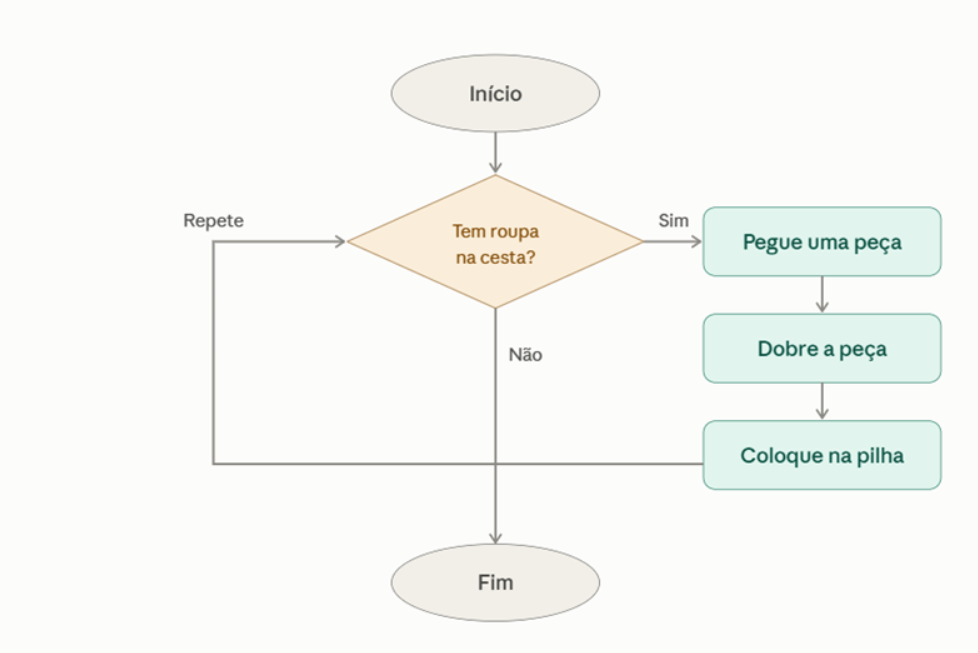
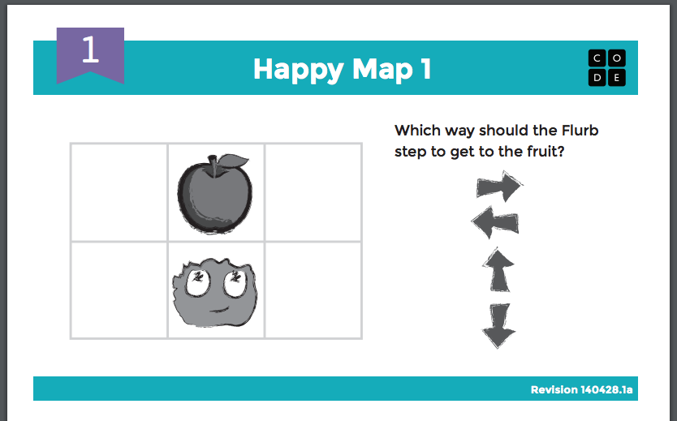

O que é Computação Desplugada?
Computação Desplugada é uma metodologia de ensino que utiliza atividades práticas e interativas para ensinar conceitos de ciência da computação sem a necessidade de computadores ou dispositivos eletrônicos. Essa abordagem permite que os alunos desenvolvam habilidades de pensamento computacional, raciocínio lógico e resolução de problemas por meio de jogos, desafios e simulações.
O avanço tecnológico se mostra cada vez mais evidente na sociedade atual. Paralelo a esse cenário, se evidencia cada vez mais um crescimento no interesse acadêmico pela área da computação, que pode ser percebido, por exemplo, pelo maior ingresso de estudantes em cursos dessa área. Percebe-se porém, que apesar do crescente número de ingressantes em cursos da área de tecnologia (tanto a nível médio quanto superior), muitos destes estudantes chegam ao curso apresentando significativa dificuldade em entender conceitos básicos para a jornada acadêmica em um curso de computação (o que contribui para uma alta evasão nos cursos desta área).
Uma forma de trabalhar tais conceitos é pelo estímulo do Pensamento Computacional, uma habilidade que, para muitos autores, é, no cenário atual, tão fundamental quanto ler e escrever.
Tida como uma das principais metodologias para trabalhar o Pensamento Computacional, Computação Desplugada se utiliza de atividades práticas e da interação entre os estudantes para exercer a prática do ensino de uma forma lúdica e experimental. A capacidade de ensinar conceitos computacionais sem necessitar de um alto investimento (muitas vezes as atividades podem ser realizadas apenas com um papel e lápis), permite que a Computação Desplugada seja uma alternativa para outro problema evidenciado no país, que é a precária infraestrutura de diversas instituições de ensino. Por isso, este trabalho visa analisar os impactos da Computação Desplugada na prática do ensino de conceitos computacionais a alunos do ensino médio e superior de cursos da área da computação. Por meio do levantamento bibliográfico levantado, a efetividade e viabilidade do emprego das atividades desplugadas para esse contexto foi evidenciada, alcançando o objetivo geral do trabalho.
Qual o objetivo?
Imagine uma aula sobre tecnologia onde cartas coloridas substituem códigos digitais e um tabuleiro se transforma em simulador de algoritmos. Esta é a computação desplugada, uma abordagem pedagógica que ensina conceitos da ciência da computação sem a necessidade de dispositivos eletrônicos, como celulares, tablets ou computadores, por exemplo. De modo geral, computação desplugada “trata-se de uma metodologia ativa de aprendizagem que tem atraído cada vez mais jovens para as salas de aula. Por meio de atividades interativas, como jogos, desafios lógicos e simulações, os alunos desenvolvem pensamento computacional, raciocínio lógico e habilidades para a resolução de problemas", explica o pedagogo Welton Dias de Lima, professor dos cursos de Pedagogia e Engenharia de Software do Centro Universitário UNICEPLAC. Aliás, tudo isso acontece de forma acessível. Durante as atividades, os alunos não utilizam meios digitais para estimular a interação social e tornar o ensino da tecnologia mais inclusivo e interdisciplinar.
Quais conceitos de computação podem ser ensinados dessa forma?
- Algoritmos de busca;
- Algoritmos de ordenação;
- Variáveis, estruturas condicionais e lógica;
- Fluxograma;
- Árvores binárias de busca;
- Raciocínio lógico;
- Sistemas numéricos;
- Estruturas de dados.
Para qual público esse tipo de atividade pode ser aplicado?
A Computação Desplugada é "para todos": trata-se de uma metodologia acessível, que não exige conhecimento técnico prévio nem equipamentos especializados, permitindo que qualquer pessoa consiga aprender conceitos de computação por meio dela.
Exemplos de atividades de Computação Desplugada:
Atividade 1: Correio Humano de Mensagens
Como funciona:
- Desenhe no chão com fita quadriculados que representam endereços/nomes de variáveis (ex.: x, y, resultado).
- Uma pessoa do grupo assume o papel de CPU (processador) e fica no centro do espaço.
- Outros participantes seguram placas com valores (ex.: 5, 3, "Maria") e caminham até as marcas no chão para "armazenar" o dado naquela posição.
- Quando a CPU precisa calcular algo, ela vai até o quadrado x, lê o valor atual, vai até o quadrado y, faz a operação mentalmente (ex.: 5 + 3 = 8) e leva o cartão com o número 8 até o quadrado resultado.
Materiais necessários:
- Fita crepe ou giz para marcar o chão
- Papel A4 ou placas de papelão
- Canetão
Conceito trabalhado:
Variáveis e Manipulação de Dados: Leitura de valor em memória, Operações matemáticas com variáveis e Atualização de estado.
Como poderia ser utilizada com a comunidade:
É excelente para quebrar o gelo em oficinas comunitárias de lógica de programação. Como exige movimento, transforma uma explicação abstrata (ler e alterar valores armazenados) em uma dinâmica corporal. Quem está assistindo consegue ver claramente que x + y não usa as letras em si, mas sim os valores contidos dentro dos espaços x e y.
Atividade 2: Tarefas do dia a dia

Como funciona:
- A pessoa lê o fluxograma em voz alta, como se fosse um robô seguindo instruções. Começa no "Início", chega na pergunta: "Tem roupa no cesto?" e precisa responder sim ou não olhando para uma cesta de verdade (ou imaginária).
- Se a resposta for "sim", ela segue o caminho da direita: pega uma peça, dobra, coloca na pilha. E aí vem uma pegadinha: a seta "Repete" a manda de volta para a pergunta, não para o "Fim". Aí a pessoa tem que perceber sozinha que está fazendo a mesma sequência de novo.
- Isso se repete até a cesta esvaziar de verdade. Só quando ela responde "não" na pergunta, o fluxo segue para baixo e chega no "Fim".
Materiais necessários:
- Um cesto com algumas peças de roupas dentro.
- O fluxograma impresso ou desenhado à mão em papel.
- Uma caneta ou o dedo, para ir apontando cada caixa do fluxograma enquanto a ação acontece.
Conceito trabalhado:
Fluxograma / Loop While: A ideia de que uma sequência de ações pode ser executada várias vezes seguidas, controlada por uma condição que decide quando parar.
Como poderia ser utilizada com a comunidade:
Pergunte ao grupo: "Quem aqui já dobrou uma cesta inteira de roupa até o fim?" Deixe as pessoas comentarem naturalmente como fazem isso. Não corrija, não estruture ainda — só colete as falas. Alguém provavelmente vai dizer algo como "vou pegando peça por peça até acabar", que é exatamente a lógica que você quer trabalhar.
Atividade 3: "Happy Loops"

Como funciona:
Nesta dinâmica, o objetivo é ensinar o conceito de algoritmos e laços de repetição de forma prática, utilizando uma grade no chão ou no papel, um personagem de sua escolha, um objetivo final (como uma fruta) e setas direcionais. O participante deve criar uma sequência de comandos para guiar o personagem até o objetivo, sabendo que cada seta representa exatamente um passo na direção indicada. Para introduzir o conceito de loop, o aluno deve sintetizar o comando utilizando a estrutura "Repita X vezes" seguida da seta correspondente.
Com a implementação de um dado, o jogador lança-o para definir o número do laço de repetição e escolhe apenas uma seta de direção, forming a instrução "Repita [número do dado] vezes [direção escolhida]". O personagem avança o número exato de casas no tabuleiro, e caso a contagem faça o personagem ultrapassar as bordas da grade ou colidir com obstáculos, o movimento é cancelado por simular um erro de código (bug), vencendo o participante que alcançar o objetivo com a menor quantidade de turnos.
Materiais Necessários:
- Uma superfície para rabiscar;
- Uma caneta;
- Um personagem da escolha do jogador;
- Um objeto para representar o objetivo;
- Setas direcionais;
- Um dado (opcional).
Conceito trabalhado:
Estruturas de repetição: Looping While e looping For.
Como poderia ser utilizada com a comunidade:
A dinâmica transforma os conceitos de laços de repetição (for e while) em uma experiência de aprendizado corporal e colaborativa, utilizando cartões de comandos e ritmos para que a comunidade execute algoritmos sem a necessidade de conhecimentos prévios de sintaxes complexas e, até mesmo, de tecnologia.
Por que o FLUXOGRAMA de tarefas do dia a dia é a opção de destaque?
Escolhemos o fluxograma por ser uma ferramenta visual e intuitiva para representar a sequência lógica de passos e tomadas de decisão necessárias na resolução de um problema. Ao participar dessa atividade, a pessoa aprende a abstrair cenários, estruturar o raciocínio e identificar com clareza condições, desvios e repetições (loops). Para adaptá-la e aprimorá-la em uma oficina de introdução à lógica de programação, poderíamos transformar a criação do fluxograma em uma dinâmica prática usando blocos físicos ou post-its para representar estruturas condicionais (se/senão) e laços de repetição, permitindo que os participantes simulem a execução do "código" manualmente antes de partirem para uma linguagem de programação real.